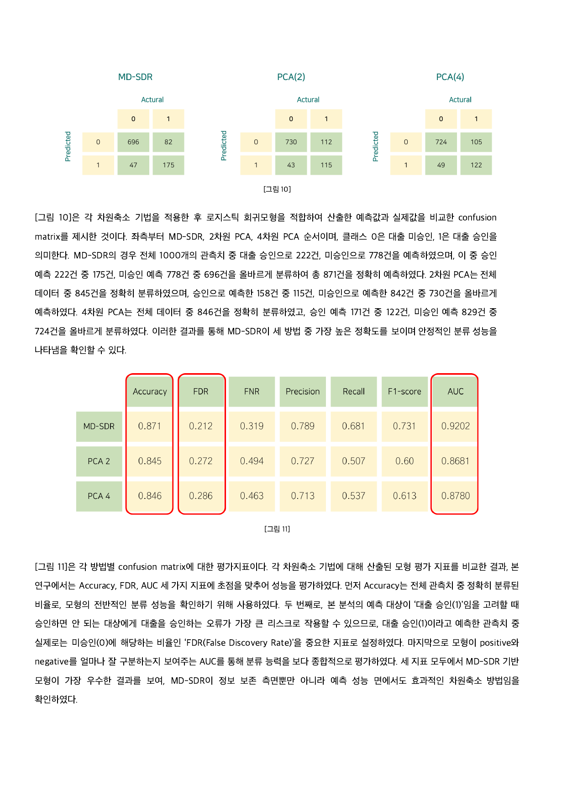

01 주제
대출 승인 데이터에는 직업, 주거 형태, 대출 목적처럼 범주가 많은 변수가 포함됩니다. 이를 더미변수로 바꾸면 분석 변수 수가 크게 늘어나므로, 승인 여부와 관련된 정보를 유지하면서 차원을 줄이는 방법이 필요합니다.
데이터의 전체 변동을 보존하는 PCA보다 목표변수와의 관계를 반영하는 감독형 차원축소가 대출 승인 예측에 더 적합한가?
02 분석 내용
먼저 선행 연구의 DRA-CS 프레임워크와 MD-SDR 방법을 검토했습니다. MD-SDR은 Distance Covariance를 이용해 설명변수와 목표변수의 의존성을 보존하는 축을 찾는 감독형 차원축소 방법입니다. PCA가 설명변수의 분산을 기준으로 축을 만드는 것과 목적이 다릅니다.
실제 적용에는 45,000개 관측치로 구성된 Loan Approval Classification Dataset에서 분포의 대표성을 유지하도록 1,000개를 추출했습니다. 6개 범주형 변수와 8개 수치형 변수를 전처리한 뒤 MD-SDR과 PCA로 차원을 축소하고 동일한 로지스틱 회귀를 적합해 성능을 비교했습니다.
03 분석 방법
- STEP 1범주형·수치형 변수 전처리
- STEP 2MD-SDR과 PCA 차원 결정
- STEP 3로지스틱 회귀 적합
- STEP 4Accuracy·FDR·AUC 비교
차원축소
- MD-SDR은 차원별 AUC를 비교해 4차원을 선택했습니다.
- PCA는 누적 설명력 약 85%를 확보한 2차원과 MD-SDR과 같은 4차원을 비교했습니다.
- MD-SDR 구현에서는 경사하강과 반복적 직교화를 사용해 직교 제약을 유지했습니다.
평가 기준
전체 분류 성능은 Accuracy로 확인했습니다. 대출 승인으로 예측한 대상 중 실제로는 미승인인 비율은 FDR로 측정했습니다. 승인하면 안 되는 대상을 승인하는 오류를 고려하기 위해 FDR을 핵심 지표로 두고, 클래스 구분 능력은 AUC로 함께 평가했습니다.
04 분석 결과
MD-SDR은 1,000건 중 871건을 정확히 분류했습니다. 2차원 PCA는 845건, 4차원 PCA는 846건을 정확히 분류했습니다. MD-SDR은 Accuracy와 AUC가 가장 높았고, 잘못된 승인 예측의 비율인 FDR은 가장 낮았습니다.
| 방법 | Accuracy | FDR | Recall | F1-score | AUC |
|---|---|---|---|---|---|
| MD-SDR 4차원 | 0.871 | 0.212 | 0.681 | 0.731 | 0.9202 |
| PCA 2차원 | 0.845 | 0.272 | 0.507 | 0.600 | 0.8681 |
| PCA 4차원 | 0.846 | 0.286 | 0.537 | 0.613 | 0.8780 |

PCA는 데이터의 변동을 설명하는 데 초점을 두지만 MD-SDR은 대출 승인 여부와의 의존성을 직접 반영합니다. 실제 결과에서도 목표변수 정보를 보존한 축이 전체 정확도와 구분 능력을 높이고 잘못된 승인 예측을 줄였습니다.
05 내 기여도
범주형과 수치형 변수가 혼합된 대출 승인 데이터를 분석 가능한 형태로 전처리하고, PCA와 MD-SDR의 차원 결정 기준을 검토했습니다. 축소된 데이터에 동일한 로지스틱 회귀를 적용해 방법 간 비교가 가능하도록 분석 흐름을 구성했습니다.
단순히 Accuracy가 높은 방법을 선택하는 데서 끝내지 않고, 승인 예측 오류가 실제 리스크가 될 수 있다는 점을 반영해 FDR을 핵심 평가 기준으로 설정했습니다. AUC와 Recall도 함께 비교하여 MD-SDR이 목표변수와 관련된 정보를 더 잘 보존한다는 결과를 해석했습니다.
06 프로젝트 자료
팀 보고서와 참고 논문은 새 창에서 열리고, 전체 코드와 데이터는 ZIP으로 내려받을 수 있습니다.